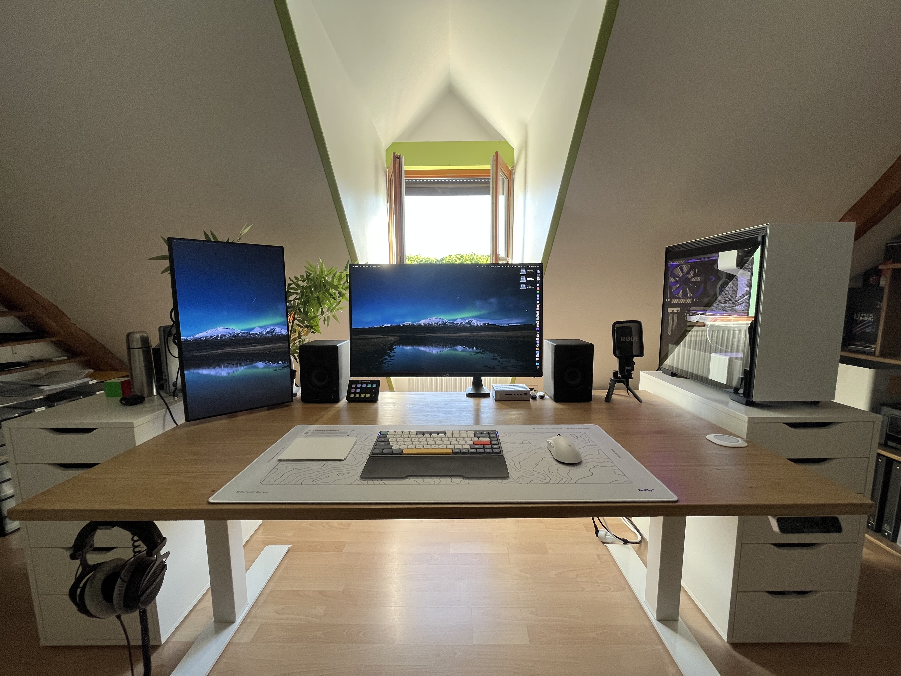
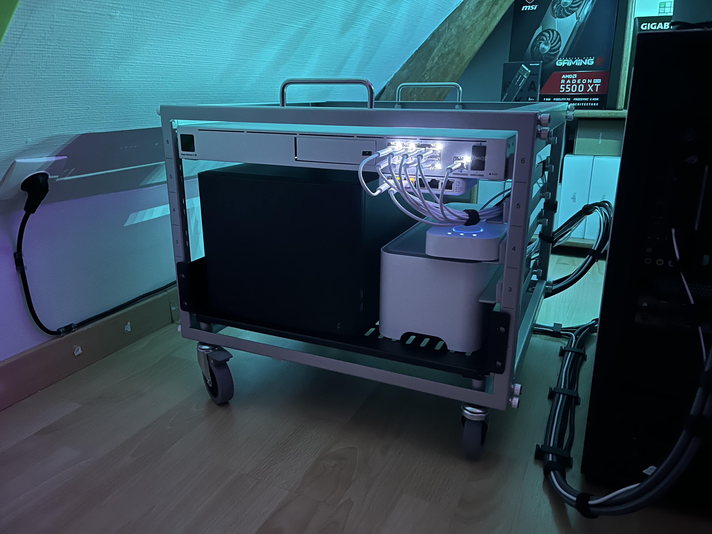
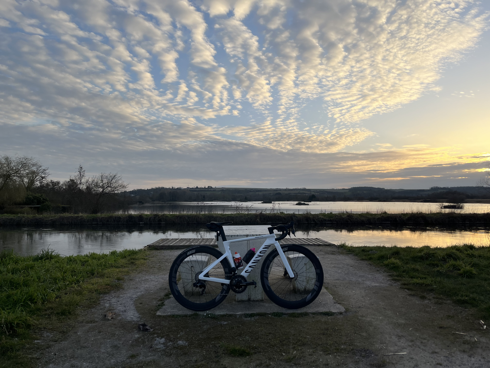
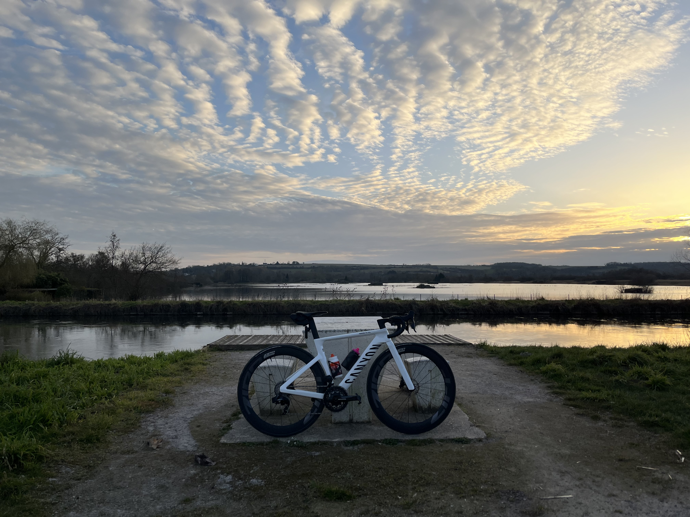

Je me présente
Salut ! Moi c'est Florian Vigneux, actuellement étudiant en première année de BUT Réseaux et Télcommunications. J'ai choisi cette formation car j'ai toujours aimé le domaine de l'informatique et surtout, je me suis intéréssé depuis quelques années au domaine de l'équipement et des services réseau. Enfin, j'espère pouvoir mettre à profit ces compétences dans ma future vie professionnelle.
Mon parcours scolaire
En 2024 j'ai passé mon baccalauréat avec spécialités Mathépatiques et Physique-Chimie auquel j'ai obtenu une mention.
En ce qui concerne mon orientation, au départ, je pensais faire un BUT Informatique, mais plus je regardais les programmes, moins j’étais motivé par la programmation d’applications ou de sites web. Ce n’était pas ce que je cherchais vraiment.
En faisant des recherches, je suis tombé sur le BUT Réseaux et Télécommunications, que je ne connaissais pas du tout. Et là, ça a vraiment parlé, parce que quelques mois plus tôt, je m’étais justement intéressé aux réseaux informatiques de mon côté
Pour être sûr de mon choix, je suis allé à plusieurs journées portes ouvertes, dont une ici même. J’ai pu discuter avec des étudiants très accueillants, visiter les locaux, voir le matériel. J’ai aussi rejoint le serveur Discord de l’IUT pour poser mes dernières questions. Tout ça m’a confirmé que c’était ce que je voulais faire.
Objectifs académiques et professionnels
J’espère pouvoir continuer de m’épanouir et perpétuer cet équilibre entre mes différentes passions et les cours à l’IUT. J'aime découvrir, apprendre et m’améliorer c’est pour cela qu’une alternance au cours de ces deux prochaines années me serait très bénéfique afin de contribuer au développement d’une infrastructure réelle tout en apprenant sur des cas concrets.
Projection sur le Portfolio
Je pense qu'on remarque assez bien la progression que j'ai faite notemment en réseau au cours de ces SAÉs. Ce portfolio m;a permis de revenir en arrière sur les multiples projets effectués tout au long de l'année et je suis assez satisfait de ma progression.
Mes passions
L'informatique
Depuis mon plus jeune age, l'informatique m'a toujours attiré. Il fallait que j'explore chaque recoin d'une application ou encore que je personnalise entièrement mon ordinateur afin qu'il me corresponde. J'ai eu l'occasion à plusieurs reprises de mettre à profit ces compétences afin d'aider, conseiller et de mettre en place différentes solutions pour ma famille, mes amis ou encore des associations.
Depuis quelques années ma passion s'est particulièrement dirigée vers tout ce qui concerne les réseaux, depuis l'utilisation du matériel et sa configuration jusqu'à la notion de sécurité. J'ai par exemple, chez moi, mis en service un routeur, des points d'accès Wi-Fi, des switchs et un NAS me permettant d'accéder à mes fichiers soit en local ou avec un accès VPN (WireGuard). Également, je maîtrise et applique l'utilisation d'un gestionnaire de mots de passe et quand c'est possible, l'authentification à deux facteurs.
Le cyclisme
Quand je ne suis pas devant mon bureau, je passe la plupart de mon temps libre à rouler la plupart du temps en groupe. Cela fait plus d'un an maintenant que je me suis pleinement mis à la pratique du cyclisme.

 
